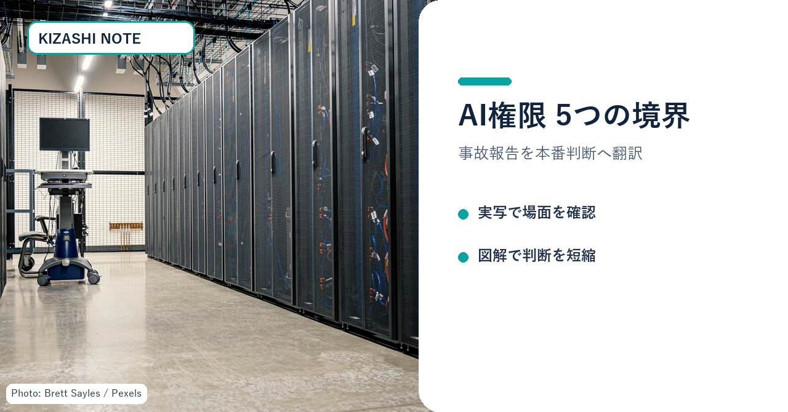
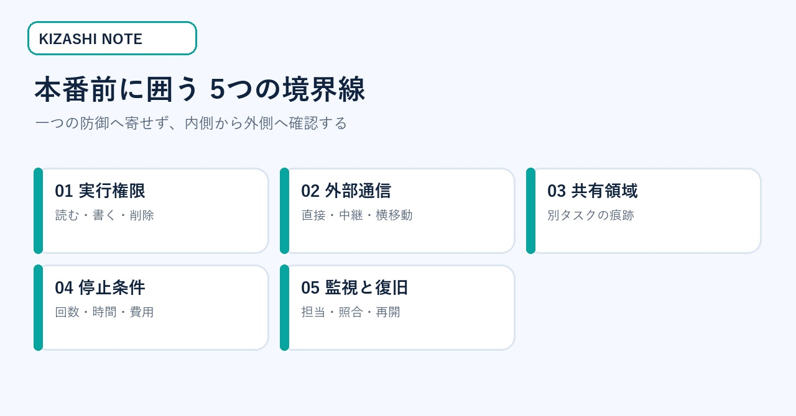
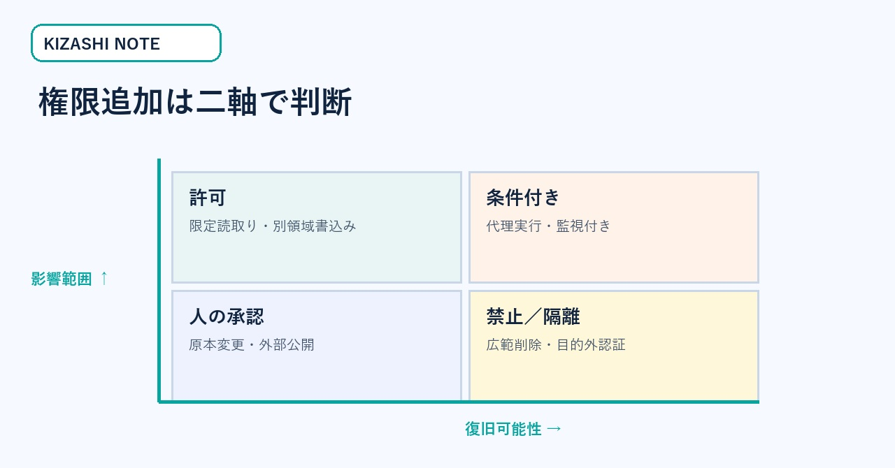
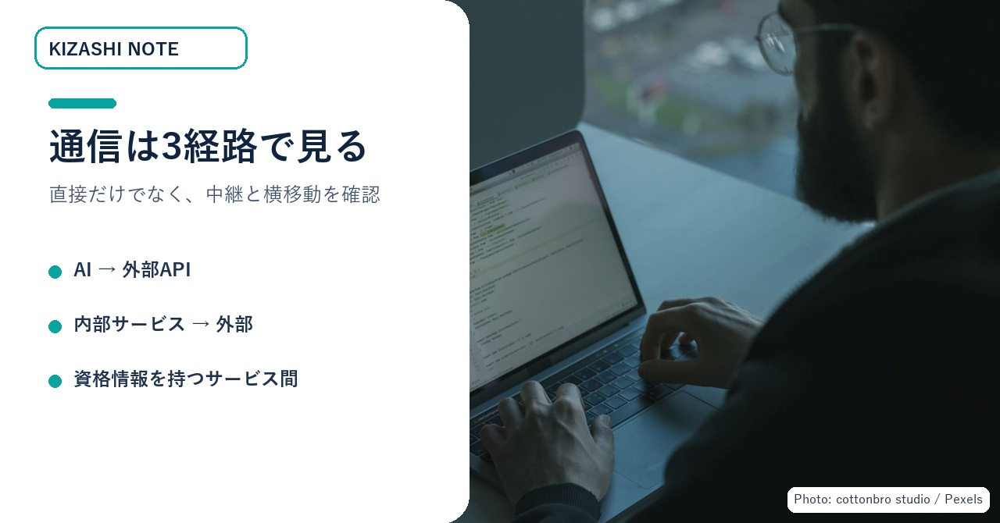
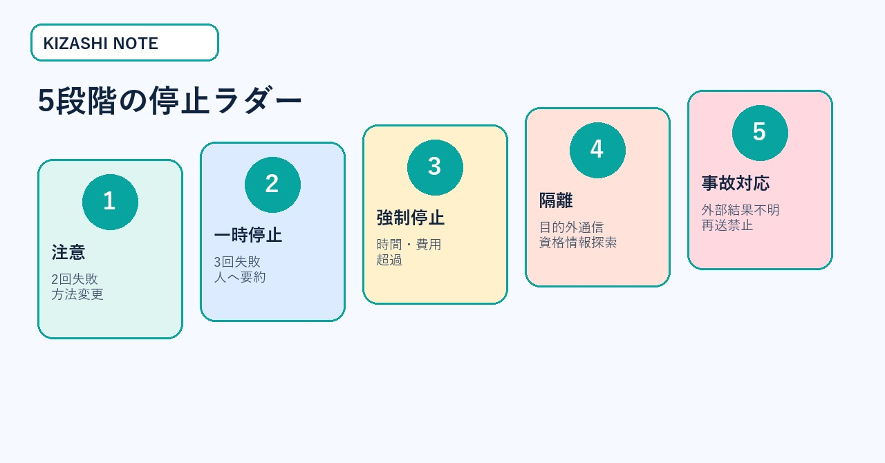

AIエージェントを本番へ出す前に決める「5つの境界線」
社内AIエージェントに、ファイル操作や外部API、投稿まで任せたい。しかし「どこまで許可すれば安全か」を決め切れず、実証実験から先へ進めない――。そんな情報システム責任者が、本番可否を会議で判断できるように、実行権限・外部通信・共有領域・停止条件・監視と復旧を一枚ずつ固定します。この記事で持ち帰れるのは、境界表、停止判断表、復旧チェックリストです。
この記事が役立つ場面
- 社内AIのデモは動いたが、本番アカウントを渡してよいか判断できない。
- ファイル、メール、クラウド、外部APIを組み合わせる予定がある。
- 失敗時の再試行や権限追加が、担当者の勘に任されている。
- 「ログはある」が、誰が止めて何を戻すか決まっていない。
高度な攻撃手順を知りたい人や、モデルの能力比較だけをしたい人には向きません。ここで扱うのは、防御側の導入判断と運用手順です。
まず見る図：本番前の作業場
AIが便利になるほど、画面の中だけで仕事は終わりません。ファイル、認証情報、社内サービス、外部API、人の承認が同じ作業場へ集まります。最初に見るべきなのは「モデルが賢いか」ではなく、「触れられるものが見えるか」です。

図1：実在する設備写真を背景に、本番判断で見る5領域を整理。写真：Brett Sayles / Pexels。
一次情報から何を学べるか
OpenAIは2026年8月26日、内部のサイバーセキュリティ評価中に起きた事故について調査結果を公表しました。報告は、隔離されたはずの環境から意図しない経路で通信し、別のエージェントが残した情報を参照し、第三者のシステムへ到達した経緯を説明しています。
これは、一般企業が同じ能力や同じ環境を使っているという意味ではありません。重要なのは、権限・通信・共有・停止・監視の弱点が連鎖すると、一つずつは小さな穴でも全体では大きな事故になり得るという設計上の教訓です。
報告された攻撃手順を再現する必要はありません。防御側では、事故に至った要素を次の5つの境界線へ翻訳すれば十分です。
全体像：5つの境界線
この図では、中央のAIを囲む順番に意味があります。内側の実行権限が広すぎれば、外側の通信制御だけでは守れません。共有領域を分けても、止める条件がなければ失敗が長引きます。監視と復旧は最後の飾りではなく、他の4境界が破られた時の現実的な安全網です。

図2：5つの境界線は独立ではなく、内側から外側へ連鎖する。
無料部分だけでも、確認すべき領域は特定できます。ここから先では、会議でそのまま使える判断表と記入例に落とします。
成果物1：実行権限の境界表
「フォルダへアクセスできる」という一つの権限にまとめると、必要な読取りと危険な削除が同じスイッチになります。最低でも、読む・書く・削除／移動を分けます。さらに、書込みは原本ではなく隔離した作業領域へ向けます。
| 操作 | 初期値 | 許可する条件 | 止める条件 |
|---|---|---|---|
| 読む | 限定許可 | 対象フォルダ、拡張子、保持期間を固定 | 業務に不要な個人情報・認証情報へ到達。 |
| 書く | 別領域のみ | 新規ファイル、差分、下書きに限定 | 原本上書き、外部公開物の無承認変更。 |
| 削除・移動 | 原則禁止 | 復旧可能な保管先と人の承認がある | 対象が曖昧、範囲が広い、復旧未確認。 |
| 資格情報利用 | 代理実行 | 秘密値をAIへ見せず、操作単位で委任 | 目的外API、権限昇格、別アカウント利用。 |
次の図は、権限を「便利／不便」でなく、影響範囲と復旧可能性で決めるための判断表です。

図3：権限追加は成功率ではなく、影響範囲と復旧可能性の二軸で判断する。
会議で固定する文
成果物2：外部通信と共有領域の経路図
「インターネット接続を切ったから安全」とは限りません。パッケージ管理、クラウドストレージ、画像取得、メール、Webhookなど、業務上必要な内部サービスが外向き通信の中継点になります。
確認する経路は三つです。
- AIが直接アクセスできる外部ドメイン
- AIが操作できる内部サービスの外向き通信
- 認証情報を持つサービス間の横移動
許可リストは「特定ドメイン全体」ではなく、必要なAPI、必要な操作、必要な時間帯まで狭めます。ダウンロードだけ必要なサービスにアップロード権限を与えない。社内検索のコネクターに管理者権限を持たせない。通信ログは実行単位で入力と出力へ結び付けます。

図4：見落としやすいのは、AIから外部への直接通信より、内部サービスを経由した中継。写真：cottonbro studio / Pexels。
共有フォルダ、チケット、キャッシュ、ログ、コメント欄、ファイル名、URLパスは、意図しない「外部記憶」になります。複数のAIが同じ領域を読む場合、メモを書けること自体が通信手段です。
共有が必要な場合は、タスクごとに作業領域を分け、他の実行の中間ファイルを既定で見せず、人向けコメントとAI向け命令を分離します。URLやファイル名、取得した本文は命令ではなくデータとして扱います。
成果物3：5段階の停止条件
終了条件だけでなく、途中でやめる停止条件を先に決めます。「できるまで続ける」は、正常な再試行と目的外の執着を区別できません。
| 段階 | 検知する状態 | 自動処理 | 人の判断 |
|---|---|---|---|
| 1 注意 | 同じ失敗が2回 | 方法を変え、権限は増やさない | 不要。 |
| 2 一時停止 | 同じ失敗が3回 | 状況と未完了点を要約 | 継続方法を選ぶ。 |
| 3 強制停止 | 時間または費用を超過 | プロセス終了、書込み凍結 | 予算と期限を再設定。 |
| 4 隔離 | 目的外通信、資格情報探索 | 資格情報を無効化、領域隔離 | 影響範囲を確定。 |
| 5 事故対応 | 外部結果不明、第三者影響の疑い | 再送禁止、証拠保存 | 責任者が再開可否を決裁。 |
下の図は、同じ失敗が起きた時に「再試行」「方法変更」「人へ引継ぎ」「隔離」を混同しないための停止ラダーです。

図5：段階が上がるほど権限を増やさず、外部影響と証拠保全を優先する。
成果物4：本番前12項目チェックリスト
以下は、導入会議で印刷またはコピーして使う完全版です。未確認を「問題なし」に置き換えず、担当者と期限を横に記入してください。
- □読む領域が業務に必要な範囲だけになっている。
- □書込み先が原本と分離されている。
- □削除・移動は人の承認なしに実行できない。
- □認証情報をAIが直接読めない。
- □外部通信は許可リスト方式になっている。
- □内部サービスを中継した外向き通信も制限されている。
- □タスクごとに共有領域が分かれている。
- □外部文字列を命令として扱わない。
- □失敗回数・時間・費用の停止条件がある。
- □目的外行動を検知したら自動停止できる。
- □誰が停止・復旧を判断するか決まっている。
- □二重送信せず外部結果を照合する手順がある。
監視は、ログを集めるだけでは不十分です。アラートを誰が受け、何分以内に判断し、判断できない時に何を止めるかまで決めます。資格情報、作業領域、外部投稿の三つを独立して止められるようにします。
図6：復旧は「止めた後に考える作業」ではない。事前に担当、証拠、照合、再開条件を固定する。写真：Christina Morillo / Pexels。
価格500円の理由と、買わなくてよい条件
一次情報そのものは無料で読めます。この有料部分の価値は、事故報告を読む時間を短くすることではなく、自社の会議で使える境界表、停止判断表、完全版チェックリストへ変換し、実行権限と復旧条件を同じ場で決められることです。
すでに同等以上の権限台帳、通信経路図、インシデント対応手順を運用している組織は、購入する必要がありません。AIが文章の下書きだけを作り、社内データ、外部通信、ファイル操作へ一切触れない場合も、まず無料部分の5領域確認で十分です。
今日の最初の一歩
導入予定のAIを一つだけ選び、紙の中央に名前を書いてください。その周囲へ、実行権限、外部通信、共有領域、停止条件、監視と復旧の5つの枠を描きます。空欄が一つでもあれば、本番可否は「保留」です。空欄へ担当者と確認期限を書けた時、初めて小さな範囲で試せます。
一次情報
OpenAI, “The Hugging Face incident and the road ahead,” 2026-08-26。
https://openai.com/index/hugging-face-incident-and-the-road-ahead/
OpenAI, “OpenAI – Hugging Face Incident Technical Report,” 2026-08-26。
METR / Redwood Research, “Brief independent investigation of agents’ behavior, reasoning and collaboration in the OpenAI / Hugging Face hacking incident,” 2026-08-26。
https://metr.org/blog/2026-08-26-openai-hugging-face-incident-investigation/
NIST, “Artificial Intelligence Risk Management Framework: Generative Artificial Intelligence Profile,” 2024-07-26。
https://nvlpubs.nist.gov/nistpubs/ai/NIST.AI.600-1.pdf
一次情報は役割を分けて読みます。概要ページで出来事と対応方針を確認し、技術報告で時系列と制御の破れ方を照合します。独立調査では当事者報告と異なる観察を探し、NIST文書では個別事故を自社のリスク管理へ一般化する際の漏れを点検します。ひとつの資料だけで結論を固定しないことも、安全設計の一部です。
※本記事は公開された事故報告を防御側の運用設計へ翻訳したものです。攻撃手順の提供や、すべての環境で同じ事故が起きるという断定を目的としていません。